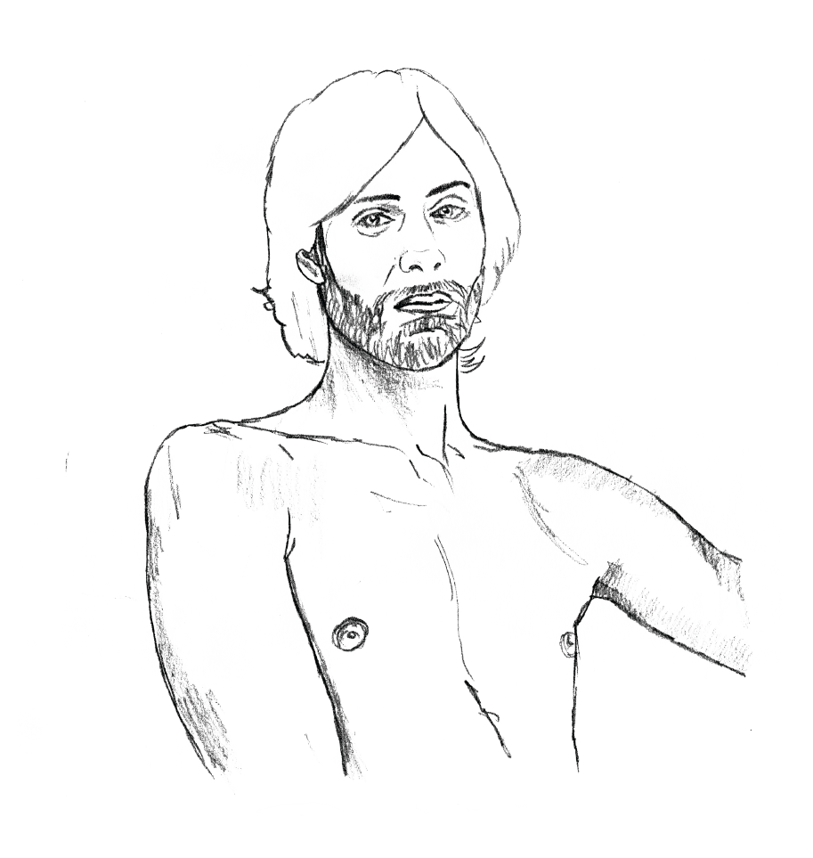
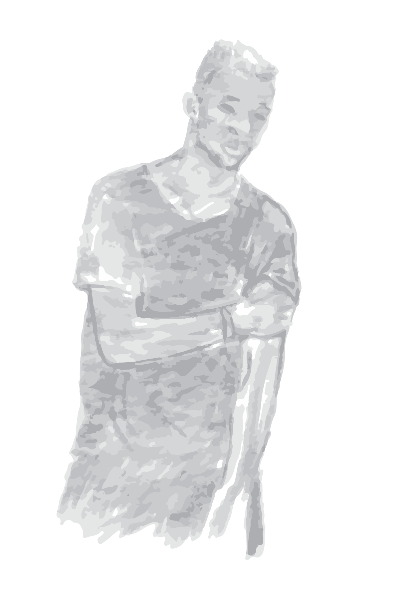
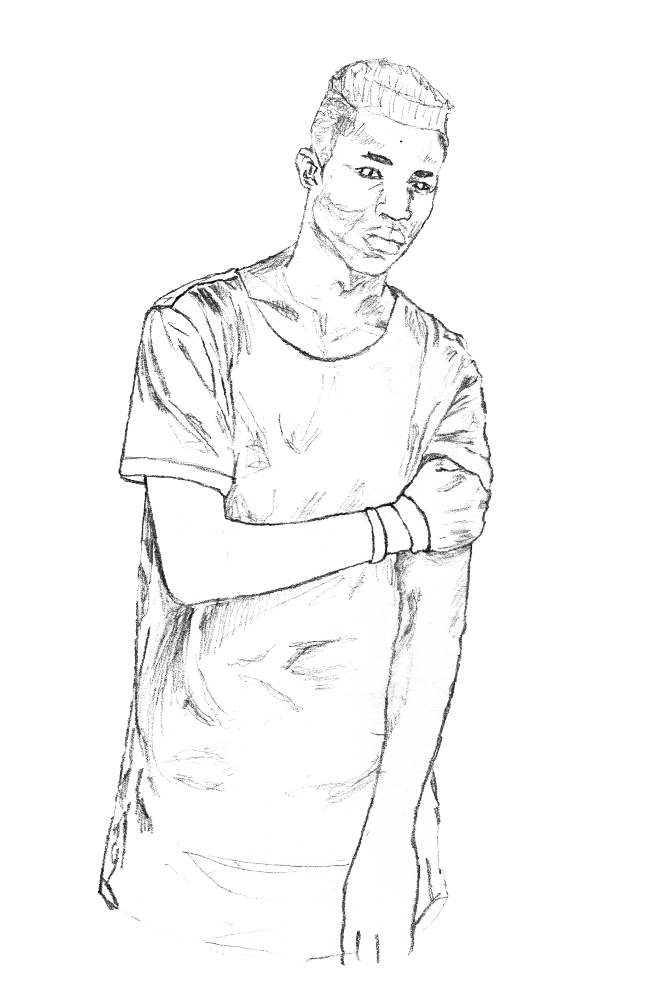
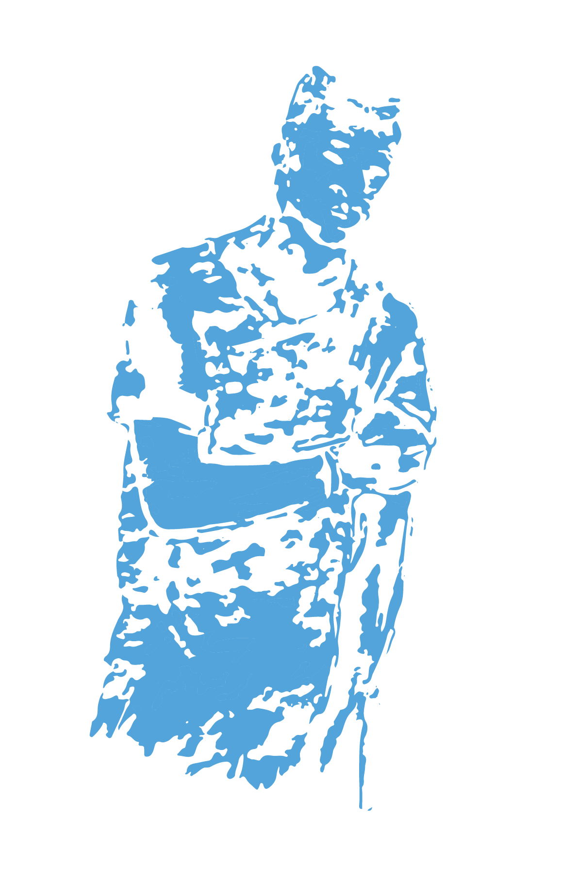
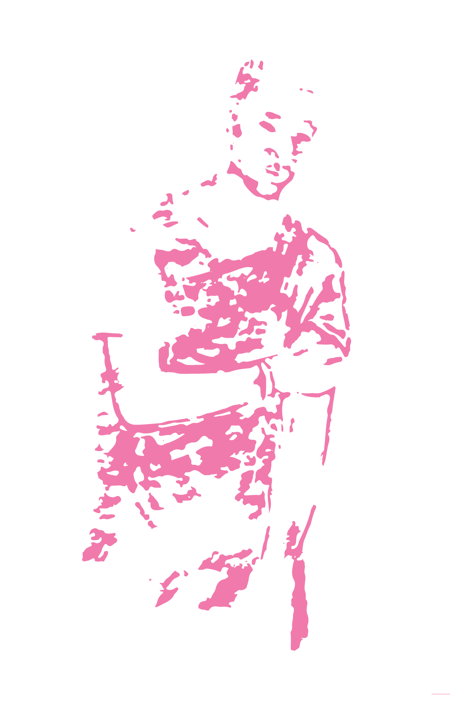

Exert From Chapter One:

Ryan and Avery do not see us.
They do not know us, or need us, or feel us in the room.
They don’t even see each other until about twenty minutes into the prom.
Ryan sees Avery over the head of a thirteen-year-old boy.
He spots Avery’s hair first, then Avery.
And Avery looks up at just that moment and sees the blue-haired boy glancing his way.
Some of us applaud.
Others look away, because it hurts too much.
   
We always underestimated our own participation in magic.
That is, we thought of magic as something that existed with or without us.
But that’s not true.
Things are not magical because they’ve been conjured for us by some outside force.
They are magical because we create them, and then deem them so.
Ryan and Avery will say the first moment they spoke, the first moment they danced,
was magical.
But they were the ones - no one else, nothing else - who gave it the magic.
We know.
We were there.
Ryan opened himself to it.
Avery opened himself to it.
And the act of opening was all they needed.
That is the magic.